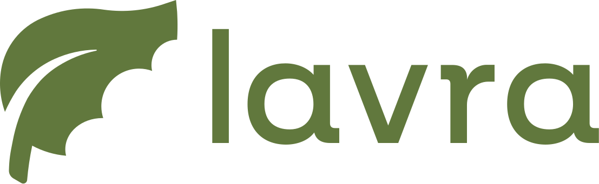

Voltar ao protótipoDocumentação do sistema. Os diagramas usam os mesmos atores, entidades e status do protótipo e do resumo.
Quem faz o quê. A avaliação é exclusiva do Produtor e depende da conclusão do atendimento.
flowchart LR
P["Produtor Rural"]
T["Técnico Agrônomo"]
subgraph L["Sistema Lavra"]
U1(["Cadastrar-se e entrar"])
U2(["Abrir solicitação"])
U3(["Acompanhar status"])
U4(["Avaliar atendimento"])
U5(["Ver solicitações recebidas"])
U6(["Agendar visita"])
U7(["Atualizar status"])
U8(["Registrar relatório"])
end
P --- U1
P --- U2
P --- U3
P --- U4
T --- U1
T --- U5
T --- U6
T --- U7
T --- U8
U4 -. "só após Concluída" .-> U7
Usuário guarda os dados de acesso e o perfil (produtor ou técnico). Cada solicitação é aberta por um produtor, ligada a uma propriedade, e pode ter um técnico atribuído. Cada solicitação tem no máximo uma avaliação. Regra de negócio: apenas usuários com perfil técnico podem ser atribuídos a uma solicitação.
erDiagram
USUARIO ||--o{ PROPRIEDADE : possui
USUARIO ||--o{ SOLICITACAO : "abre (produtor)"
USUARIO |o--o{ SOLICITACAO : "atende (técnico)"
PROPRIEDADE ||--o{ SOLICITACAO : origina
SOLICITACAO ||--o| AVALIACAO : recebe
USUARIO {
int id_usuario PK
varchar nome
varchar email
varchar perfil "produtor ou técnico"
boolean consentimento_lgpd
}
PROPRIEDADE {
int id_propriedade PK
varchar nome
decimal area_ha
varchar cultura
int id_produtor FK
}
SOLICITACAO {
int id_solicitacao PK
varchar assunto
text descricao
varchar urgencia
varchar status
date data_visita
text relatorio
int id_propriedade FK
int id_produtor FK
int id_tecnico FK
}
AVALIACAO {
int id_avaliacao PK
int nota
text comentario
datetime criada_em
int id_solicitacao FK
}
Ciclo de vida que sustenta as regras de negócio. Não é possível pular etapas nem voltar.
stateDiagram-v2 [*] --> Aberta : Produtor envia Aberta --> Agendada : Técnico agenda visita Agendada --> EmAtendimento : Técnico inicia EmAtendimento --> Concluida : Técnico registra relatório Concluida --> Avaliada : Produtor envia nota Avaliada --> [*] EmAtendimento : Em atendimento Concluida : Concluída
Da abertura da solicitação até a avaliação final, como no protótipo.
sequenceDiagram actor P as Produtor participant L as Lavra actor T as Técnico P->>L: Abre solicitação com propriedade, assunto e descrição L-->>P: Status Aberta T->>L: Consulta solicitações recebidas T->>L: Agenda visita L-->>P: Status Agendada T->>L: Inicia atendimento T->>L: Conclui com relatório L-->>P: Status Concluída e avaliação liberada P->>L: Envia nota e comentário L-->>T: Status Avaliada